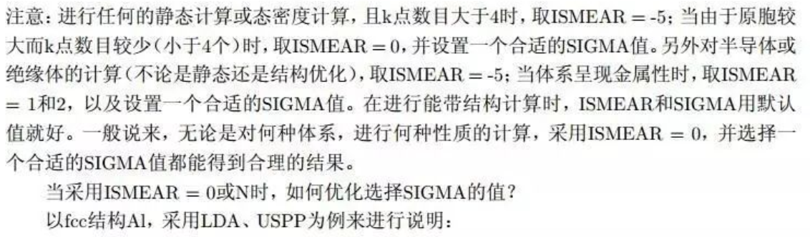

DOS计算
与结构优化相比,算DOS的时候,需要用到更多的K点数目,这是因为K点越多,画出来的DOS图质量越高
ISMEAR = -5 的时候(Blöchl修正的四面体方法),我们可以得到一个非常平滑的DOS图。很多人问怎么才能获得平滑的DOS图,这就是答案!!ISMEAR = -5 并且使用较多的K点。
如果你的模型很大,只用了一个gamma点,或者K点的数目小于等于3 的时候,使用ISMEAR = -5 会导致计算出错
对于金属体系来说,算DOS的时候,结构保持不动(这是关键),可以放心使用ISMEAR= -5。但是,结构优化的时候不能使用ISMEAR= -5(注意:是优化结构的时候不能用!)
半导体和绝缘体的体系可以尽情使用ISMEAR= -5,但绝对不能在这两个体系中使用 ISMEAR>0。等于0 则可以
注意：四面体方法（ISMEAR = -5）不适合计算能带（对所有的体系来说的）
使用ISMEAR= -5 的时候,SIGMA的取值没有影响
总结:算DOS,只要K点不少于3,其他情况都用ISMEAR=-5
服务器不给力,不能增加K点的时候,怎么办?又分两种情况:(少许有些绕弯) ——
半导体和绝缘体,使用ISMEAR= 0 (Gaussian Smearing,高斯展宽,后面统一简称GS方法) ;(再次注意:此时绝对不能大于0!!!)金属,可以使用ISMEAR = 0,也可以使用Methfessel-Paxton (MP)方法:后面统一简称:MP方法。 ISMEAR = 1, 2….N,一般来说,ISMEAR =0和 1 基本就可以了。(注意:金属可以等于0,也可大于0)MP方法(ISMEAR=1..N): SIGMA取值太大,计算出来的能量可能不正确;SIGMA取值越小,计算越精确,需要的时间也就越多
SIGMA的取值和KPOINTS密切相关,Kpoints确定之后,使用多大的SIGMA值,大家最好测试一下。
SIGMA取值在保证OUTCAR中' entropy T*S' 这项的能量平均到每个原子上小于 1 meV的前提下:尽可能地大。这样做可以保证准确度的同时加快收敛速度。
1) 对于大部分的体系都能得到理想的结果; 2) SIGMA取值比较大的时候会得到与MP方法相近的误差;但是误差多大,GS方法不可以得到,而MP方法可以。从这一点上来说,MP要比GS好些; 3) 从经验上来说:对于金属体系,使用MP方法(ISMEAR=1..N)时,SIGMA= 0.10 足够了,官网给的参考值是0.20。 4) 使用GS方法的时候(ISMEAR=0),SIGMA的数值要测试下,保证'entropy T*S'这一项平均到每个原子上小于0.001 eV也就是1meV。5)不想测试,对于金属体系:SIGMA=0.05是一个很安全的选择。 对于半导体和绝缘体,SIGMA取值要小,SIGMA = 0.01 – 0.05 之间也是很安全的
NOTE:
SIMGA小的时候,ISMEAR = 0 和 ISMEAR = 1 效果基本一样; SIMGA数值大的时候,ISMEAR= 1 效果更好。 所以,如果你首先设置一个很小的SIMGA数值,不用太担心ISMEAR的选取。但反过来,如果你首先设置了ISMEAR这一项,就需要考虑SIGMA的大小了。懒得考虑就设置一个比较小的SIGMA值,比如0.05,即可
查看运行时间脚本：
grep LOOP+ */OUTCAR
为什么还要算2步呢：
1） 由于高质量的DOS需要精细的K点，如果我们设置的K点很多，就会造成计算上的负担，前面我们讲过K点与计算时间的关系； 2） 另外一个原因就设计到能带的计算了，这里我们摘抄一下网上的解释： 由于在能带计算时k点是一些在倒空间高对称线上的点，不能进行自洽计算。 参考网址：http://blog.sciencenet.cn/blog-567091-675253.html 也就是计算能带的时候，自洽计算是必须的一步； 3） 即使增加K点的数目，电荷密度和有效势能的收敛依然很快，也就是K点的变化对电荷密度的收敛影响不大。
计算步骤：
- 结构优化
- 用小的K点自洽，产生电子密度（CHGCAR文件）
- 增加K点，并保持前面一步的电子密度不变（ICHARG=11）
LORBIT = 10 把态密度分解到每个原子以及原子的spd轨道上面，称为为局域态密度，Local DOS (LDOS) LORBIT =11 在10的基础上，还进一步分解到px，py，pz等轨道上，称为投影态密度（Projected DOS）或者分波态密度(Partial DOS)，即PDOS。所以LORBIT = 11可以提供我们更多的信息。
WAVECAR读不读 ：请用默认值ISTART=1(存在则读，不存在则不读)
通过2步计算DOS的时候，不要忘记LCHARG=.TRUE
一步计算DOS必须的参数： 1 ISMEAR = -5 2 LORBIT = 11 3 高密度的K点
两步计算DOS必须的参数: 第一步： ISMEAR = -5 LCHARG = .TRUE. 稍微低密度的K点 第二步： ISMEAR = -5 ICHARG = 11 LORBIT = 11 高密度的K点
数据后处理：p4vasp或vaspkit均可